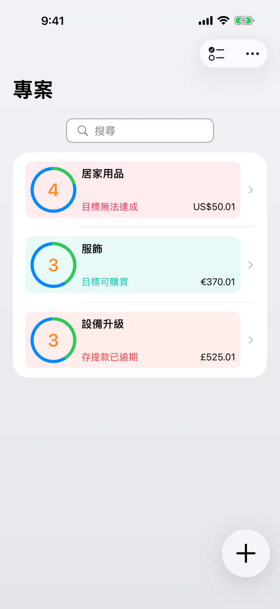
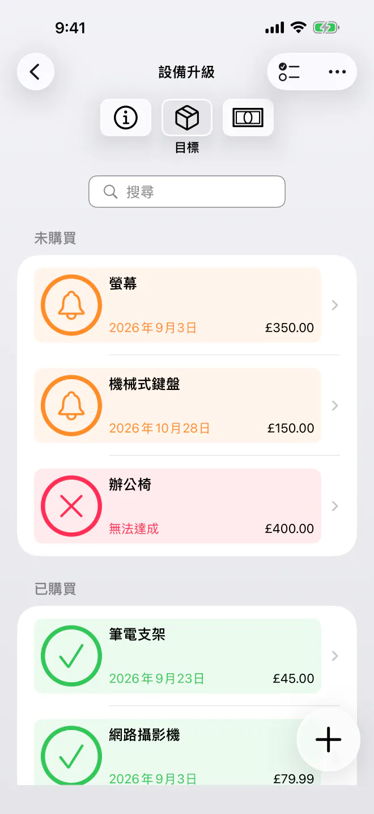
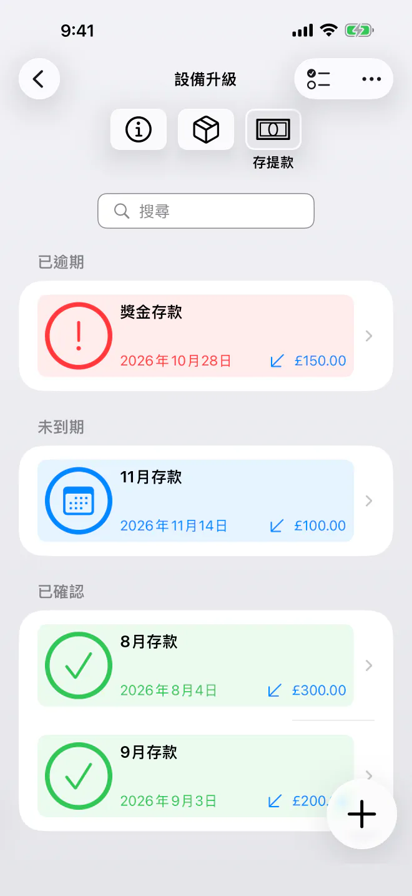
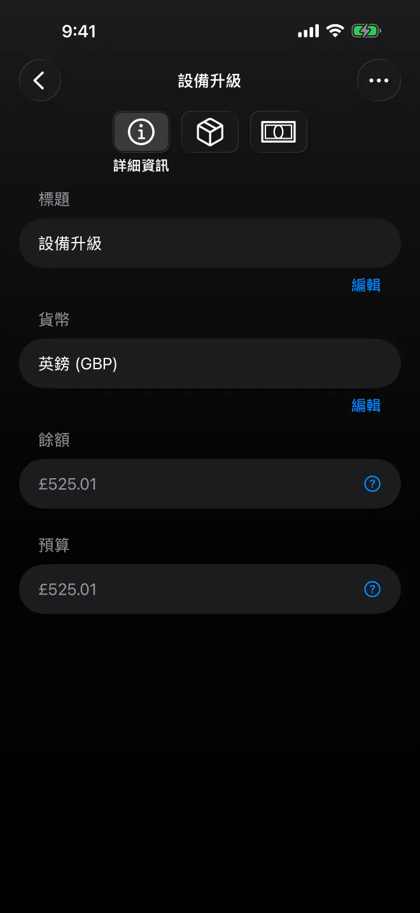

精準掌握何時可以購買
為儲蓄目標排好優先順序，了解每件物品最早什麼時候買得起。簡單、私密的規劃，自動產生購買時間軸。無需帳號。


別再猜測什麼時候才能買到清單上的下一件東西。 BudgetBear 是一款簡單、私密的 App，能把你的目標變成清晰的購買時間軸。新增目標、設定優先順序、規劃存款——一切都在一個寧靜、簡潔、尊重你隱私的介面中完成。
準備好開始規劃你的購物了嗎？今天就下載 BudgetBear。
為什麼選擇 BudgetBear
- 100% 私密，由你掌控 — 你的財務資料只儲存在你的裝置上。沒有自訂帳號，沒有第三方伺服器，也無需雲端註冊——永遠如此。
- 極簡而專注 — 快速、易用的介面，專注於把事情做好。沒有雜亂，沒有不必要的複雜性。
- 精準掌握何時可以購買 — BudgetBear 會算出你最早什麼時候買得起每個目標，讓你不必再靠猜。
- 以優先順序為核心 — 把你的優先順序與已規劃的存提款結合起來，將儲蓄計畫變成每個目標切實可行的購買日期。
把優先順序變成購買日期
透過這套以清晰為核心的系統，全面掌控你的長期消費與儲蓄目標。
依優先順序排列的願望清單
新增附有預估價格的目標物品（目標），並拖曳成你想要的先後順序。
動態時間軸計算
調整價格、新增存款或重新排序目標時，購買日期會即時更新。
靈活的資金流動
新增一次性存款來補足預算；如果決定把錢挪作他用，也可以記錄提款。
排程存提款
設定有期限的定期存款或提款排程（例如每個第 2 個星期二或發薪日），讓時間軸自動運作。

儲蓄目標的核心功能
- 依優先順序排列的儲蓄專案 — 將相關目標歸入專屬專案，例如旅行、電子產品、居家升級或緊急預備金。
- 智慧分配 — 資金會自動優先撥給優先順序最高的目標，直到該目標資金充足，再順延到下一個。
- 簡潔極簡 — 介面清爽、無干擾，方便快速輸入，沒有多餘的花俏功能，也沒有複雜的選單。
- 有期限的定期排程 — 設定開始日期、結束日期與間隔，輕鬆安排定期投入，無需複雜規則。
多種儲蓄使用情境
從專項儲備金到大額購買，BudgetBear 都能適應你的目標。
專項儲備金
為已知的未來支出預留資金，例如保險費、節慶購物或車輛保養。
依優先順序排列的願望清單
整理接下來想買的物品，看看新增一筆存款能讓購買日期提前多少。
大額購買
把大額購買拆成可負擔的定期投入，看著時間軸一點一點縮短。

以隱私為核心的設計
無訂閱。無追蹤器。無自訂帳號。
BudgetBear 將一切都保存在本機——不會上傳、同步或與任何人分享。你的目標與預算詳細資料絕不會離開你的裝置。
可免費開始使用，最多 3 個專案。一次性升級 Pro 即可解鎖不限數量的專案——永遠無需訂閱。
清晰高效
無論你是在為假期存錢、為新裝置存錢，還是在建立緊急預備金，BudgetBear 都是你可靠的夥伴，幫你把儲蓄目標變成具體的購買日期。簡單、私密，無需訂閱。
最好的效率工具不會礙事，讓你能夠專注。BudgetBear 就是這樣——沒有不必要的功能，沒有令人眼花撩亂的介面，只有一條清晰的目標時間軸。